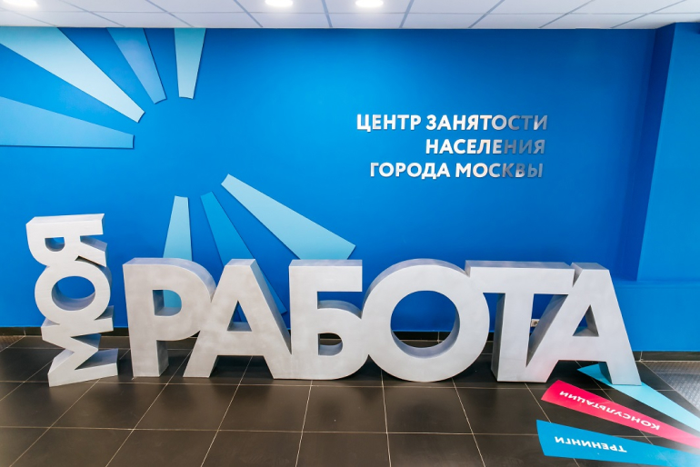

«Моя работа» научит москвичей проходить онлайн-интервью
- 26.11.2021
- Москва
- 25
24 ноября Центр «Моя работа» приглашает соискателей на мероприятие «Найдите работу онлайн, не выходя из дома». Участники смогут пройти онлайн-интервью на вакансии крупнейших работодателей, познакомиться с современными технологиями трудоустройства, работы и обучения в дистанционном формате. Об этом сообщила исполняющая обязанности директора Центра занятости населения «Моя работа» Мария Устинова.
 Изображение: https://czn.mos.ru/«Сейчас в агрегированной базе вакансий службы занятости более 27 тысяч предложений удаленной работы. Многие работодатели сегодня не только используют дистанционный формат взаимодействия с работниками, но и проводят собеседования удаленно. Однако «взять обаянием» онлайн обычно сложнее, чем при личном контакте. Навыки общения и прохождения интервью дистанционно стали необходимыми для соискателей. Важно успевать за современными тенденциями и развивать цифровые компетенции и в трудоустройстве. На мероприятии «Найдите работу онлайн, не выходя из дома» мы представим актуальные предложения о работе для «белых воротничков», в том числе предполагающие удаленный формат работы. Участники смогут пройти интервью с работодателями онлайн», – рассказала Мария.
Подзаголовок
Поделится лайфхаками успешного прохождения онлайн-собеседования, поможет слушателям развить уверенность в себе при общении с работодателями в сети, чтобы такой формат интервью вызывал только «азарт победителя», карьерный консультант Екатерина Кленова, сертифицированный карьерный консультант, член Ассоциации карьерных консультантов АККС и эксперт по развитию карьеры в Нетологии на вебинаре «Как успешно пройти онлайн-интервью». О том, как сохранить продуктивность, желание работать и эффективно выполнять свои задачи из дома расскажет ведущий эксперт ANCOR Consulting, Екатерина Жукова на вебинаре «Как эффективно работать на дистанте».
На сайте Центра «Моя работа» можно посмотреть расписание мероприятий на ноябрь и выбрать подходящий для себя тренинг.
Поделится лайфхаками успешного прохождения онлайн-собеседования, поможет слушателям развить уверенность в себе при общении с работодателями в сети, чтобы такой формат интервью вызывал только «азарт победителя», карьерный консультант Екатерина Кленова, сертифицированный карьерный консультант, член Ассоциации карьерных консультантов АККС и эксперт по развитию карьеры в Нетологии на вебинаре «Как успешно пройти онлайн-интервью». О том, как сохранить продуктивность, желание работать и эффективно выполнять свои задачи из дома расскажет ведущий эксперт ANCOR Consulting, Екатерина Жукова на вебинаре «Как эффективно работать на дистанте».
Источник: https://czn.mos.ru/News/Detail//33679946-c3b8-4c3e-9b67-b0c50c3e03b3
Филиал государственного казенного учреждения Республики Адыгея «Адыгейский республиканский центр занятости населения» в городе Адыгейске